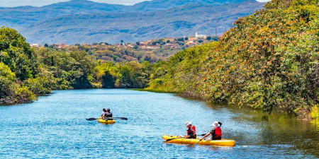
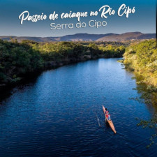

Lindos chalés e uma experiência inesquecível no coração da Serra do Cipó!
Para tornar sua estadia ainda mais especial, nossa pousada oferece experiências únicas de aventura e contato direto com a natureza exuberante da Serra do Cipó. São atividades cuidadosamente selecionadas para quem deseja explorar a região de forma divertida, segura e inesquecível.
Viva a adrenalina de pilotar quadriciclos de 500 cilindradas em trilhas que passam por belíssimos cenários naturais. Com acompanhamento profissional e seguro aventura incluso, o passeio garante emoção com total segurança.
Embarque em um passeio de Jeep 4x4 e descubra paisagens incríveis enquanto atravessa trechos de estrada e trilhas que revelam toda a essência da Serra do Cipó. A atividade conta com seguro aventura para maior tranquilidade dos participantes.
Navegue com calma e contemplação pelas águas cristalinas dos rios Cipó e Parauninha. Os passeios de caiaque, também com seguro aventura, proporcionam momentos de paz, diversão e total integração com a natureza.
Todos os passeios acontecem na belíssima região dos rios Cipó e Parauninha, áreas conhecidas por suas águas transparentes, mata preservada e cenários ideais para quem ama natureza e novas experiências.


fonte : https://portalserradocipo.com.br/
Cada atividade possui duração aproximada entre 2h e 3h, variando conforme o trajeto, o clima e o ritmo do grupo.
Os valores dos passeios são informados diretamente no contato com nossa equipe, garantindo sempre a melhor proposta para a sua experiência.